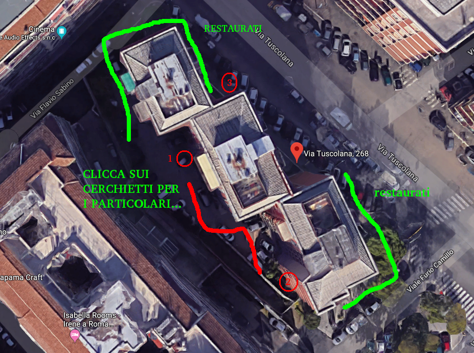

  <map name="shapes">
   
    <area shape="circle" coords="359,309,20" href="./1/index.html" alt="pilatrso fotografato dalla strada">
   
    <area shape="circle" coords="565,552,20" href="./2/index.html" alt="pilatrso fotografato dalla strada">
   
    <area shape="circle" coords="449,161,20" href="./3/index.html" alt="pilatrso fotografato dalla strada">
   
   
   
   
  </map>